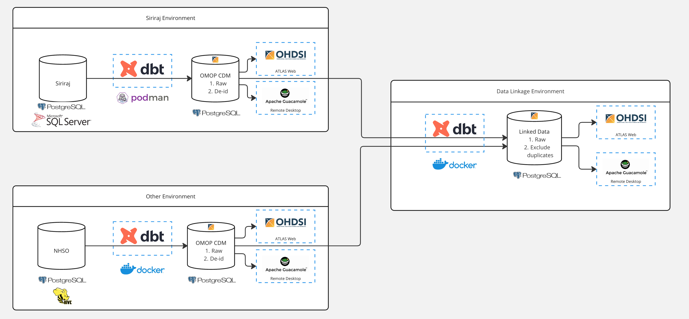
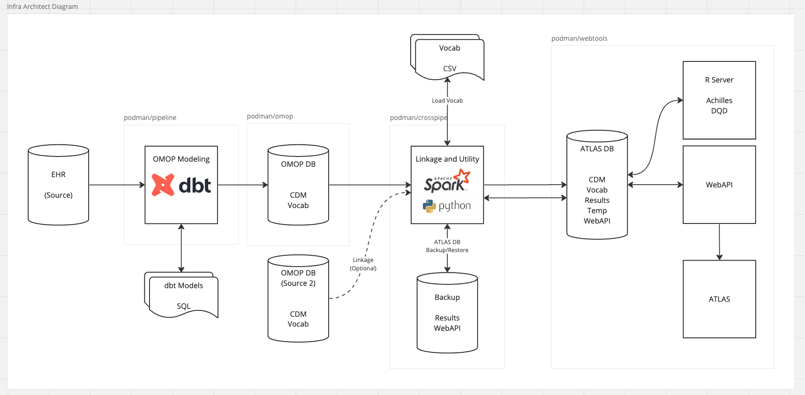
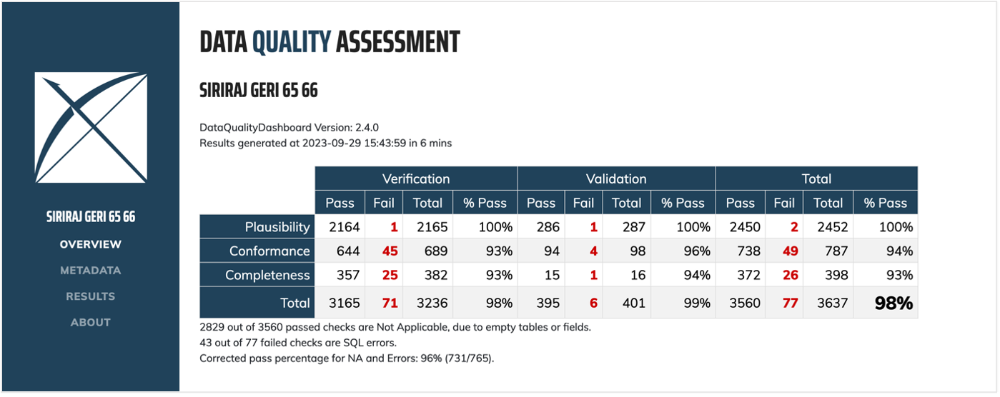
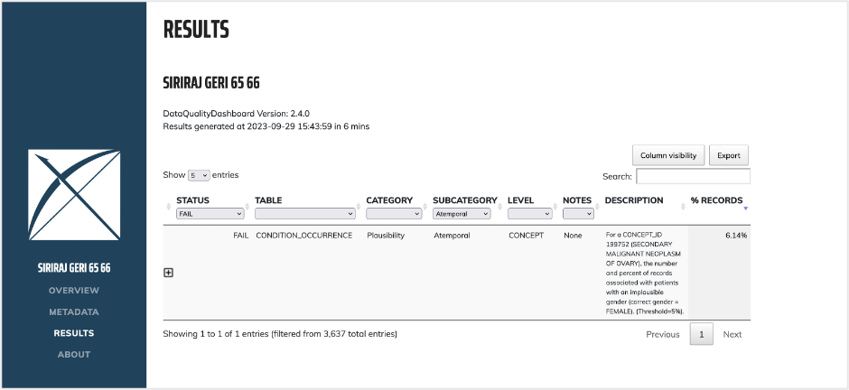
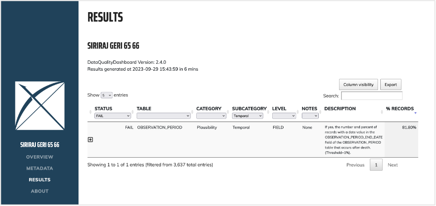

4 ตัวอย่างการแปลงข้อมูล
เว็บไซต์นี้อยู่ระหว่างจัดทำ จึงยังมีเนื้อหาไม่ครบถ้วน
ท่านสามารถร่วมเพิ่มเติมหรือแก้ไขเนื้อหาต่าง ๆ ได้ที่ GitHub: sidataplus/omop-book
จาก 4 ขั้นตอนในกระบวนการแปลงข้อมูล ที่กล่าวถึงใน หัวข้อ 2.2 ในบทนี้ จะแสดงตัวอย่างวิธีการดำเนินการแปลงข้อมูลเป็น OMOP CDM ที่คณะแพทยศาสตร์ศิริราชพยาบาลได้ดำเนินการไว้ ทีละขั้นตอน (step by step)
4.1 Map ข้อมูลต้นทางตาม OMOP CDM
- ศึกษา ทำความเข้าใจแต่ละตาราง (tables) และข้อตกลง (conventions) ต่าง ๆ ใน OMOP CDM Documentation
- จัดลำดับว่าจะเริ่ม mapping OMOP CDM tables ใดก่อน-หลัง โดยแยกเป็นกลุ่ม ๆ (sprint) เริ่มจาก tables ที่ง่าย ไม่ depends on tables อื่นก่อน
LOCATION,CARE_SITE,PROVIDERPERSON,DEATHVISIT_OCCURRENCE,OBSERVATION_PERIODCONDITION_OCCURRENCE,PROCEDURE_OCCURRENCE,OBSERVATION,COSTMEASUREMENT,DRUG_EXPOSURE
- รวบรวม รายละเอียดว่าข้อมูลที่ OMOP CDM ต้องการ อยู่ที่ใดบ้างในโรงพยาบาล บาง tables อาจต้องใช้ข้อมูลจากหลาย database มาประกอบกัน เช่น ข้อมูลการวินิจฉัย (
condition_occurrence) มาจากทั้งระบบ OPD และ IPD เป็นต้น โดยขั้นตอนนี้จะมีการประชุมกับผู้ที่เข้าใจข้อมูลในโรงพยาบาล ตรวจสอบตัวอย่างข้อมูลต้นทาง จนกว่าจะแน่ใจว่าได้รายละเอียดที่ครบถ้วน เพื่อจัดทำเป็น ETL Spec ของแต่ละ Table ในขั้นตอนนี้ใช้ระยะเวลาประมาณ 2 – 3 เดือน
ตัวอย่าง ETL Spec
| CDM Field | EHR Table | EHR Field | Notes |
|---|---|---|---|
condition_occurrence_id |
- | - | running id sorted by visit_occurrence_id |
person_id |
IPD: T_inpatient, OPD: T_outpatient |
IPD & OPD: hn |
mapped to person.person_source_value |
condition_concept_id |
- | - | mapped from condition_source_concept_id to SNOMED |
condition_start_date |
IPD: T_inpatient, OPD: T_outpatient |
IPD: admission_date, OPD: visit_date |
|
condition_type_concept_id |
- | - | IPD: 32824 for EHR discharge summary, OPD: 32817 for EHR |
condition_status_concept_id |
- | - | IPD: IF final_grp = ‘G1’ THEN 32903 for Primary discharge diagnosis ELSE 32896 for Discharge diagnosis, OPD: 32893 for Confirmed diagnosis |
provider_id |
IPD: T_inpatient |
IPD: doctor_code |
mapped to provider.provider_source_value |
visit_occurrence_id |
IPD: T_inpatient, OPD: T_outpatient |
IPD: an, OPD: vn |
mapped to visit_occurrence.visit_source_value |
condition_source_value |
IPD: T_inpatient, OPD: T_outpatient |
IPD: final_code, OPD: icd_code |
IPD: WHERE final_type = ‘D’ |
condition_source_concept_id |
- | - | maps condition_source_value to concept.concept_code WHERE concept.vocabulary_id = ‘ICD10’ |
ศึกษาตัวอย่าง ETL Spec เพิ่มเติม ได้จากไฟล์ .docx ในแต่ละ folder บน GitHub นี้
4.2 Map รหัสที่เก็บต้นทางให้เป็น standard
แบ่งเป็น 2 วิธี โดยทำวิธีที่ 1 เป็นเบื้องต้นก่อน แล้วจึงนำ mapping รหัสจากวิธีที่ 2 มารวม
ทั้งนี้หากยังไม่ได้ทำวิจัยร่วมกับ network ระดับสากล อาจข้ามไปก่อนได้
4.2.1 ใช้ mapping table CONCEPT_RELATIONSHIP ที่ download ได้จาก Athena
- เข้าเว็บไซต์ https://athena.ohdsi.org/
- สมัครสมาชิก (ฟรี) ที่ tab Login มุมขวาบน
- ไปที่ Download จากนั้นเลือกชุด Vocabularies เช่น ICD10 และ SNOMED เป็น ที่ต้องการใช้งาน จากนั้น Download
- รอจนเตรียม file เสร็จสิ้น และ dowload จะได้ไฟล์ CSV มา
- นำข้อมูลจากไฟล์ CSV ทั้งหมดเข้าสู่ database ที่ต้องการเก็บข้อมูล OMOP CDM (โดยอาจแยก schema กับ cdm เป็น schema
vocabเป็นต้น) ด้วยการใช้ script Python จาก GitHub: sidataplus/omop-vocab-loader หรือเครื่องมืออื่น ๆ ตามความเหมาะสม - map code จากต้นทาง เช่น ICD10 เป็นมาตรฐาน เช่น SNOMED โดยใช้ข้อมูลใน table
CONCEPT_RELATIONSHIPfieldRELATIONSHIP_IDเป็น ‘maps to’ ตามตัวอย่าง SQL code นี้
4.2.2 ทำการ map code manual ด้วยโปรแกรม Usagi
ดำเนินการตามขั้นตอนที่ระบุไว้ใน คู่มือ Usagi โดยสามารถเลือก code ที่มีการใช้งานเยอะ (frequent codes) และ/หรือ จำเป็น (crucial codes) ต่องานวิจัยก่อน
4.3 เขียน code Extract-Transform-Load (ETL)
4.3.1 High-level architecture

ระบบการแปลงข้อมูลสู่มาตรฐาน OMOP CDM พัฒนาบน container (Docker หรือ Podman) ที่สามารถนำไปใช้งานในระบบใหม่ เช่น โรงพยาบาลอื่น ๆ หรือ ระบบการเบิกจ่ายอื่น ๆ ได้ องค์ประกอบในแต่ละระบบ (environment) ประกอบด้วย
- Data Source จาก SQL database ในรูปแบบข้อมูลที่ต้นทางเก็บ โดยดำเนินการ Extract ข้อมูลด้วย Python หรือ Spark
- Data Transformation Engine ทำให้หน้าที่ในการแปลงข้อมูลให้อยู่รูปแบบมาตรฐาน OMOP CDM โดยใช้เครื่องมือ dbt ด้วยภาษา SQL
- Data Sink ที่เก็บข้อมูลในรูปแบบ OMOP CDM และผ่านการทำ de-identification (ภาคผนวก B) โดยระหว่างพัฒนาจะใช้ PostgreSQL และสามารถย้ายไปยังฐานข้อมูลอื่นได้เมื่อพัฒนาเป็น production โดยดำเนินการ Load ข้อมูลด้วย Python หรือ Spark
- OHDSI Tools เครื่องมือที่รองรับการใช้ข้อมูล OMOP CDM เช่น Atlas Web Application
- Remote Desktop Environment เพื่อให้นักวิจัยเข้ามาใช้ข้อมูลที่แปลงเป็น OMOP CDM แล้ว โดยมีการควบคุม security โดยใช้เครื่องมือ Apache Guacamole
และออกแบบให้สามารถทำการเชื่อมโยงข้อมูล (Data linkage) ระหว่างระบบได้ (ภาคผนวก C)
4.3.2 Detailed components

ประกอบด้วย Docker Compose 4 modules หลัก ดังนี้
| ลำดับ | รายการ | คำอธิบาย |
|---|---|---|
| 1 | Pipeline | ภายใน Container ประกอบด้วย dbt ซึ่งเป็น Query Engine ทำหน้าที่หลักเป็นการช่วยประมวลผลคำสั่ง SQL ที่ใช้สำหรับแปลงเปลี่ยนข้อมูลตารางจากฐานข้อมูลต้นทาง ให้อยู่ในรูปแบบ OMOP โดยทำการ Compile ไฟล์โค้ดที่เป็น dbt Template ส่งต่อไปประมวลผลที่ฐานข้อมูลปลายทางที่เป็น OMOP ให้ตรงกับ Dialect ที่ฐานข้อมูลปลายทางใช้งาน ซึ่งในโครงการนี้มีการพัฒนาบน PostgreSQL ในส่วนไฟล์คำสั่ง SQL ได้มีการออกแบบให้จัดเก็บออกเป็น Repository ย่อยออกจากส่วนระบบ Container เพื่อให้มีความคล่องตัวขึ้นในการนำไปพัฒนาให้เข้ากับชุดข้อมูลต้นทางจากหลากหลายแหล่งที่ต่างกัน แต่ยังคงนำมาประมวลผลบนระบบมาตรฐานเดียวกันได้ |
| 2 | OMOP CDM | ภายใน Container ประกอบด้วยระบบฐานข้อมูล PostgreSQL ที่ใช้จัดเก็บข้อมูลในรูปแบบ OMOP CDM ในตัว Container มีการกำหนดและตั้งค่าระบบฐานข้อมูลอย่างการกำหนดการจัดสรรทรัพยากร การกำหนดระบบความปลอดภัย และการกำหนด Schema สำหรับจัดเก็บที่เหมาะสม ในการออกแบบจะเน้นให้ Container ส่วนนี้มีการใช้งานเพื่อพัฒนาโมเดลข้อมูลเป็นหลักและคอยเป็นส่วนติดต่อประสานโดยตรงกับส่วนของ Pipeline |
| 3 | Data Linkage Crosspipe | ในส่วนนี้จะเป็น Container สำหรับจัดการส่วนประสานระหว่างสภาพแวดล้อมเพื่องานพัฒนา OMOP และงานวิเคราะห์ OMOP อีกทั้งยังมีองค์ประกอบเสริมในการจัดการระบบฐานข้อมูลของ ATLAS ให้สามารถเป็นไปได้ด้วยตัวผู้ใช้เอง โดยระบบได้มีการพัฒนา User Interface ให้อยู่ในรูปแบบ Command-line (CLI) บนระบบ Python และมีการใช้งานระบบ Apache Spark ในการขนย้ายข้อมูลระหว่างระบบฐานข้อมูล นอกจากนี้ Container นี้ยังได้มีการฝังระบบฐานข้อมูล PostgreSQL ไว้จัดเก็บข้อมูลสำหรับการ Backup หรือพักข้อมูลชั่วคราวไว้ |
| 4 | Webtools | ในส่วนนี้จะเป็น Container สำหรับจัดการระบบด้านงานวิเคราะห์เพื่อใช้งานด้านการทำวิจัยเป็นหลัก ภายใน Container จะมีระบบฐานข้อมูล PostgreSQL ฝังไว้เป็นระบบ Infrastructure พื้นฐานที่เก็บการตั้งค่าและควบคุมระบบ Analytics Service อื่นๆ ภายใน Container นี้ อีกทั้งยังมีการออกแบบการเก็บข้อมูลของ OMOP อีกระดับหนึ่ง ซึ่งเป็นการแยกสภาพแวดล้อมออกจากฝั่ง Modeling ซึ่งจะมีการควบคุมการ Replicate ข้อมูลด้วยการใช้งานในส่วนของ Crosspipe |
องค์ประกอบย่อยใน module 3 Data Linkage Crosspipe มีดังนี้
- ransfer เป็นระบบหลักในการสำเนาและขนย้ายข้อมูล (Replicate) จากสะภาพแวดล้อมเพื่องานพัฒนา OMOP ออกสู่สะภาพแวดล้อมเพื่องานวิเคราะห์ ซึ่งอยู่ภายในส่วนของ Webtools โดยก่อนการขนย้ายข้อมูล จะมีการตรวจสอบความถูกต้องเบื้องต้นก่อนทำการ Transfer ว่าฐานข้อมูล OMOP มีความครบถ้วนเบื้องต้นพร้อมแล้วหรือไม่
- Vocab มีการให้บริการเกี่ยวกับการจัดการ Vocab ซึ่งผู้ใช้สามารถทำการตรวจสอบว่ารายการ Vocab ที่ฐานข้อมูล OMOP ปัจจุบันใช้งานอยู่ได้ อีกทั้งสามารถทำการติดตั้งชุด Vocab เข้าไปในระบบใหม่ได้
- Backup เป็นการสำรองข้อมูลจากระบบ ATLAS ออกมาเก็บไว้ ในกรณีที่มีการเปลี่ยนแปลงการตั้งค่าบนระบบ ATLAS
- Restore เป็นการนำข้อมูลที่มีการสำรองมาก่อนหน้านี้ ใส่กลับไปยังระบบของ ATLAS
องค์ประกอบย่อยใน module 4 Webtools มีดังนี้
- R Server เนื่องจากในส่วนของ Module เพื่องานวิจัยของทาง OHDSI นั้นอยู่ในรูปแบบ R Package โดยใน Container นี้ได้ติดตั้ง R Server ให้สามารถใช้งาน Module ต่างๆ ได้ด้วยการเปิด Console ผ่านหน้า Web Browser และได้ติดตั้ง Package ที่จำเป็นอย่าง DatabaseConnector (OHDSI) และ Hades
- WebAPI เป็น Back-end Service ที่ใช้ในการควบคุมระบบ ATLAS โดยระบบ WebAPI เป็นระบบ Java ที่ให้บริการ Web Server และควบคุมคำสั่งการสื่อสาร (Interface) ระบบผู้ใช้เว็บ ATLAS และระบบฐานข้อมูล OMOP
- ATLAS เป็นส่วน Front-end Service สำหรับเข้าถึงฐานข้อมูล OMOP สำหรับงานวิจัย
4.3.3 Data transformation with dbt
การทำ ETL จากข้อมูลต้นทางสู่มาตรฐาน OMOP CDM โดยมากมักจะใช้ภาษา SQL ซึ่งในระบบของศิริราชใช้ SQL ร่วมกับเครื่องมือ dbt ในการจัดการ code ที่เขียนขึ้นให้ไประเบียบ
เนื่องจากกระบวนการ transformation มีรายละเอียดระบบข้อมูลภายในองค์กร เพื่อความปลอดภัย จึงไม่สามารถเปิดเผย code ที่ใช้งาน สู่สาธารณะได้
ทั้งนี้สามารถเข้าถึง code ตัวอย่างที่พัฒนาขึ้นบนข้อมูลสังเคราะห์ Synthea ได้ที่ GitHub: sidataplus/ETL-Synthea-dbt
การแปลงข้อมูล แบ่งขั้นตอนการแปลงเป็น 4 ขั้น
- Source นำเข้าข้อมูลจากระบบต้นทาง
- Staging (stg) คัดเลือกข้อมูล แปลงชื่อ fields และปรับรูปแบบข้อมูล เช่น การทำ unpivot จาก wide เป็น long format
- Intermediate (int) การรวมข้อมูลจากแหล่งต่าง ๆ และปรับข้อมูลตามเงื่อนไข เพื่อให้เข้าสู่มาตรฐาน OMOP CDM
- CDM นำข้อมูลที่แปลงแล้วเก็บไว้ใน schema ของ cdm และตรวจสอบ data types ให้ถูกต้อง
โดยมีการ test ความถูกต้องของข้อมูลแต่ละขั้น และมีการทำตาราง check (chk) เพื่อตรวจสอบกรณีต่าง ๆ เช่น รหัสที่ไม่ได้ map เป็นมาตรฐาน
4.4 ตรวจสอบคุณภาพข้อมูลและรหัสที่แปลงแล้ว
เนื่องจากการข้อมูลที่เก็บไว้ในระบบของโรงพยาบาลไม่ได้มีวัตถุประสงค์หลักเพื่อการวิจัย จึงอาจมีคุณภาพข้อมูลไม่ดีพอ อีกทั้งกระบวนการแปลงข้อมูล อาจทำให้ข้อมูลผิดพลาดเพิ่มขึ้น ไม่ตรงตามมาตรฐาน ทาง OHDSI จึงได้พัฒนาเครื่องมือ Data Quality Dashboard ซึ่งใช้ในการตรวจสอบคุณภาพข้อมูลมากกว่า 3,000 automated tests ตามแนวทางของ Kahn et al. (2016) โดยแบ่งการตรวจสอบคุณภาพเป็น 3 ประเภท
- Conformance ว่าข้อมูลที่แปลงมาแล้วเป็นไปตามมาตรฐาน OMOP CDM กำหนดไว้หรือไม่
- Completeness ว่าข้อมูลมีความครบถ้วนหรือไม่
- Plausibility ว่าข้อมูลมีความเป็นไปได้ในความเป็นจริงหรือไม่ เช่น การลงรหัสโรคตามเพศ ผลทางห้องปฏิบัติการ ลำดับเวลาที่ให้บริการ (admission ก่อน discharge) มีเหตุการณ์หลังเสียชีวิตไปแล้วหรือไม่ เป็นต้น
เครื่องมือ Data Quality Dashboard สามารถเข้าถึงได้ที่ GitHub: OHDSI/DataQualityDashboard โดยมีคู่มือการใช้งาน
สรุปขั้นตอนการใช้งานได้ดังนี้
- ติดตั้ง
DataQualityDashboardLibrary ใน R environment อาจดำเนินการผ่าน RStudio บน local machine หรือ R Server ก็ได้ - ระบุ Database connection details
- ตั้งค่า parameters ในการตรวจสอบ
- ตรวจสอบคุณภาพข้อมูล โดยการเรียกใช้ function
executeDqChecks() - ระบุ file path ของ JSON ที่เก็บค่าผลลัพธ์การตรวจสอบ
- แสดง dashboard โดยการเรียกใช้ function
viewDqDashboard()
ตัวอย่าง Data Quality Dashboard

ตัวอย่างปัญหาที่ตรวจพบเช่น มีการลงรหัสมะเร็งรังไข่ทุติยภูมิ ในผู้ป่วยเพศชาย 6.14% ของผู้ป่วยมะเร็งรังไข่ทุติยภูมิทั้งหมด ซึ่งสูงกว่าค่า error threshold ที่ยอมรับได้ 5%

และ มีการกำหนดเวลาที่อยู่ในข้อมูล (observation period) หลังผู้ป่วยที่เสียชีวิตแล้ว เป็นต้น ซึ่งประเด็นเหล่านี้ช่วยให้มีการตรวจสอบแหล่งที่มาของข้อมูล และวิธีการแปลงข้อมูล เพื่อปรับปรุงให้ถูกต้องที่สุด ก่อนนำข้อมูลไปใช้ในงานวิจัยต่อไป
